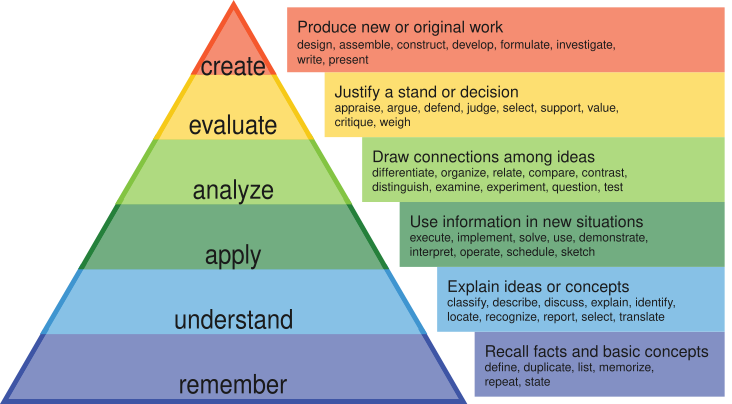

Watch a capable AI system for a while and work with it regularly. There is always a question in your mind whether the sentience that people keep talking about is here. It always feels around the corner, but when you actually want something done end to end, it does not quite work out. There have been many instances where we at Greyquill have tried end-to-end applications by letting the AI do everything. It does a good job of producing an output that is somehow workable, but compared to the standard of understanding we held when we delivered enterprise software before, it does not get there without a little hand-holding by a human here and there.
If it can recall almost anything, explain almost anything, and apply a method on request, what is left that is distinctly ours? That used to be the question that would bother us a lot when we were trying to face the chaos. The answer we have arrived at, with much thought, with practice, and with collaborative development, is reassuring, but only if we act on it. What is left is the harder half of thinking, and it is the half that decides what kind of world we build.
What the machines actually took
There is a useful old map of thinking here. Bloom's revised taxonomy, a concept I recently revisited and the trigger for this writing, sorts cognition into six levels, from lower order to higher order: remember, understand, apply, then analyze, evaluate, and create.1 The first three are about handling knowledge that already exists. The last three are about doing something new with it.
Today's systems are unbelievably strong at the first three. They remember at a scale no person can match. They construct clear explanations. They apply procedures on demand. Where they stay weak, or in my view fall short, is exactly where the stakes are highest: evaluating what is right, and creating something that did not exist before. (I would genuinely love for someone to point me to a place where AI actually does this at a human level.)
That second weakness is easy to underrate. Building anything, from a small application to a whole system, is a modest act of world-making. You decide what exists, what is allowed, and who it serves. That is evaluation and creation, the top of the ladder, and it is precisely the work the machines do not do on their own.
Building a system is a small act of world-making. That is exactly the work the machines don't do.
This should change how we learn
If the lower rungs are being automated, the purpose of education has to move up the ladder. Less time proving you can remember and apply, more time learning to analyze, to judge, and to make. Analytical thinking and systems thinking, taught early, is the biggest need of the hour. If this is taken seriously, I would not be surprised if the PhD-level understanding of today ends up in the hands of someone at a tenth-standard level, someone who has already spent their previous nine years condensing more knowledge than was ever possible before.
But unfortunately, society is drifting the other way. Attention spans are shrinking, feeds are engineered to be endless, and the general appetite for hard, sustained thinking is thinning. The same mediums that could raise a generation's cognitive baseline are, too often, being used to lower it.

We have done this before
This is not the first time a new medium reshaped how people think. When the printing press made books cheap and available, literacy spread, new reading habits formed, and standardized knowledge began to circulate widely. That shift helped set the Renaissance, the Reformation, and the Scientific Revolution in motion.2 A medium, pointed at the right thing, can lift the cognitive baseline of a whole civilization.
The mediums a child has today let them absorb faster than most of us could have imagined. Pointed well, they could compress the road to the kind of understanding that once took a master's or a doctorate. And it is worth remembering that prodigy has never been purely a gift of birth. Just as better nutrition, over generations, let bodies grow taller and stronger than before, the right structuring of knowledge could let more minds grow faster and think in step with the technologies arriving around them. The prodigal could become less a rarity and more an outcome we choose to enable.
But only if we build it that way
The same technology can be built to hold attention, which is what the current social media apps are becoming increasingly good at, or to grow it, and those are not the same goal. A great deal of what gets built optimizes for engagement, because engagement is easy to measure and easy to sell. But engagement is not growth, and a tool that only harvests minutes will, in time, rot the very ecosystem it feeds on.
The alternative is to build for the climb: tools that strengthen judgment and creation rather than just capturing attention. Keeping capable technology open and shared helps, because more people can then learn from it and build on it, instead of a few holding it closed. The end-of-the-world framing around all of this is not new either. Humanity has met apocalyptic predictions before and, so far, has come through them. What carried us was not the technology itself. It was people choosing to improve, adapt, and hand better tools and better thinking to the generation after.
Why I am sharing this, and how we think about it at Greyquill
Our north star is simple to say and hard to live: build what matters. When we bring newer technology to a client, whether AI, machine learning, or an unfamiliar new interface, the first question is never what it can do. It is whether it enhances the actual purpose of the business and the experience of the people it touches, or just adds noise. That question is the core of how we build, and it is a large part of why we are in this work at all.
In the same spirit, over time we intend to open some of the tools we have built and used internally, so we sit closer to the community rather than apart from it.
If you are building anything that shapes how people think, from a product to a curriculum, the question worth sitting with is whether it helps people climb or just keeps them scrolling. I would genuinely like to hear how others are working through it.
Sources
- Bloom's revised taxonomy classifies remember, understand and apply as lower-order skills and analyze, evaluate and create as higher-order skills. The Peak Performance Center. link
- On the printing press spreading literacy and helping set the Renaissance, Reformation and Scientific Revolution in motion, see "7 Ways the Printing Press Changed the World," HISTORY. link
PS: Fittingly, I used AI only to help organize this. The idea, the points, and their origination are mine, as are the judgment and the argument. AI did the lower-order structuring; the thinking that matters stayed human. Which is rather the point.